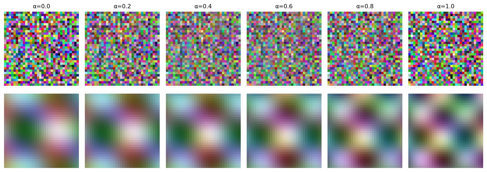
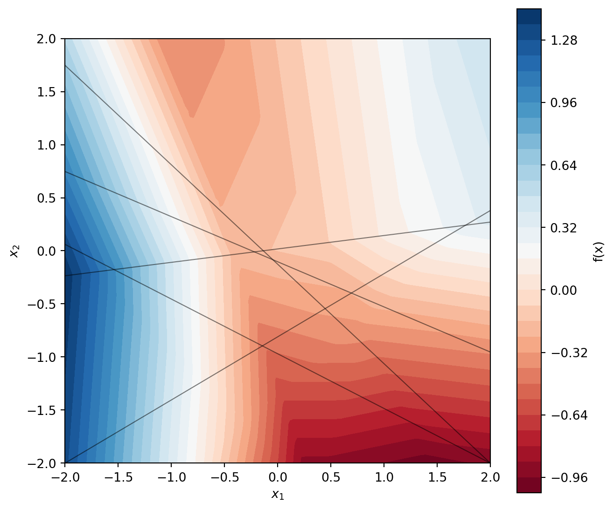

On why overparameterized models work, when they fail, and what we’re actually learning
ml
deeplearning
Published
December 29, 2025
The Puzzle of Too Many Parameters
Monthly airline passengers from 1949 to 1960. You want to forecast the next few years. A linear model has 2 parameters. A cubic polynomial has 4. A degree-20 polynomial has 21.1
Classical statistics warns against the high-parameter option. More parameters, more opportunities to chase noise instead of signal. The cubic should suffice.
Yet modern deep learning uses models with billions of parameters trained on datasets that cover a vanishing fraction of possible inputs. By classical logic, these models should memorize their training data and fail on anything new. Still, they seem to ace very difficult benchmarks.
The Arithmetic of Impossibility
A language model predicts the next token given all previous tokens:
If every atom in the observable universe were a training example, we’d still have seen essentially nothing. The model encounters novel inputs on every forward pass, yet produces sensible outputs.
The arithmetic says learning is impossible. The models work anyway. One of these must be wrong.
Real Data Is Not Random Data
Sample an image uniformly at random from the space of all 256×256 RGB images. You get noise. Sample a million. Still noise. The space of natural images—photographs, paintings, anything a human would recognize—occupies a measure-zero subset of pixel space.
A striking way to see this: take two random points in pixel space and walk linearly between them. Every step is noise. Now take two real images and walk between them along the data manifold (as a generative model learns to do). The intermediate points look like images—blurry perhaps, but recognizably structured.
Code
import numpy as npimport matplotlib.pyplot as pltnp.random.seed(42)fig, axes = plt.subplots(2, 6, figsize=(12, 4.5))# Top row: random walk in pixel spacestart_random = np.random.rand(32, 32, 3)end_random = np.random.rand(32, 32, 3)for i, alpha inenumerate(np.linspace(0, 1, 6)): interp = (1- alpha) * start_random + alpha * end_random axes[0, i].imshow(interp) axes[0, i].axis('off') axes[0, i].set_title(f'α={alpha:.1f}', fontsize=10)axes[0, 0].set_ylabel('Random\ninterpolation', fontsize=11, rotation=0, ha='right', va='center')# Bottom row: "manifold" interpolation (simulated with smooth structure)for i, alpha inenumerate(np.linspace(0, 1, 6)): freq_blend =1.5+ alpha x = np.linspace(-2, 2, 32) y = np.linspace(-2, 2, 32) X, Y = np.meshgrid(x, y) img = np.zeros((32, 32, 3)) base =0.5+0.25* np.sin(freq_blend * X + alpha *2) * np.cos(freq_blend * Y - alpha) img[:,:,0] = base +0.15* np.sin(X *2+ alpha *3) img[:,:,1] = base +0.1* np.cos(Y *3- alpha *2) img[:,:,2] = base +0.12* np.sin((X - Y) *2+ alpha) img = np.clip(img, 0, 1) axes[1, i].imshow(img) axes[1, i].axis('off')axes[1, 0].set_ylabel('Manifold\ninterpolation', fontsize=11, rotation=0, ha='right', va='center')plt.tight_layout()plt.show()

Figure 1: Walking through image space. Top: linear interpolation between random points yields noise throughout. Bottom: interpolation along a learned manifold produces structured images at every step.
The same holds for text. Random token sequences are gibberish. Coherent sentences, paragraphs, arguments—these live on a thin subspace of token-sequence space, constrained by grammar, semantics, and the structure of ideas worth expressing.
This resolves the arithmetic paradox. The impossibility proof assumes you need to cover the full input space. But the data we care about concentrates on a low-dimensional structure, and coverage of that structure is tractable.
The Manifold Hypothesis
The standard formalization: data lies on or near a \(d\)-dimensional manifold \(\mathcal{M}\) embedded in the ambient space \(\mathbb{R}^D\), where \(d \ll D\).
Covering a \(d\)-dimensional manifold requires samples scaling as \(\epsilon^{-d}\), not \(\epsilon^{-D}\). If images live on a manifold of dimension 1,000 rather than filling a space of dimension 200,000, the sample complexity drops from astronomical to merely large.
Pope et al. (2021) measured intrinsic dimensions of standard image datasets and found values in the hundreds to low thousands—far below ambient dimension, though not trivially small.
A circularity to notice
The manifold hypothesis is typically invoked after observing that deep learning works. Rarely does anyone estimate the intrinsic dimension before training and verify it’s small enough for the available data. The hypothesis is plausible, but its use is often post-hoc rationalization.
The Geometry of Piecewise Linear Functions
ReLU networks compute piecewise linear functions. Not approximately linear. Exactly linear, within each piece.
The ReLU activation \(\text{ReLU}(x) = \max(0, x)\) is piecewise linear with two pieces. Compositions of affine transformations and coordinate-wise ReLUs yield piecewise linear functions on convex polytopes. Within each polytope, the network computes \(f(x) = Wx + b\) for some \(W\) and \(b\) specific to that region.
/var/folders/gk/s1v9_48163q2rxpc1x2gq21m0000gn/T/ipykernel_40082/3517710329.py:14: RuntimeWarning:
divide by zero encountered in matmul
/var/folders/gk/s1v9_48163q2rxpc1x2gq21m0000gn/T/ipykernel_40082/3517710329.py:14: RuntimeWarning:
overflow encountered in matmul
/var/folders/gk/s1v9_48163q2rxpc1x2gq21m0000gn/T/ipykernel_40082/3517710329.py:14: RuntimeWarning:
invalid value encountered in matmul
/var/folders/gk/s1v9_48163q2rxpc1x2gq21m0000gn/T/ipykernel_40082/3517710329.py:15: RuntimeWarning:
divide by zero encountered in matmul
/var/folders/gk/s1v9_48163q2rxpc1x2gq21m0000gn/T/ipykernel_40082/3517710329.py:15: RuntimeWarning:
overflow encountered in matmul
/var/folders/gk/s1v9_48163q2rxpc1x2gq21m0000gn/T/ipykernel_40082/3517710329.py:15: RuntimeWarning:
invalid value encountered in matmul

Figure 2: A ReLU network partitions the input space into convex polytopes. Within each region, the function is exactly affine.
There’s a topological way to think about this. A neural network progressively transforms the input space, stretching and folding it until the data becomes linearly separable.2 The network learns a coordinate system in which the problem is simple.
The number of linear regions grows exponentially with depth. A network can have far more regions than training points. Most regions contain no data at all.
What Training Determines
Consider a single linear region containing \(n\) training points in \(D\)-dimensional space. The network computes \(f(x) = Wx + b\) throughout this region. Training enforces:
\[Wx^{(i)} + b = y^{(i)} \quad \text{for } i = 1, \ldots, n\]
These are \(n\) constraints on a gradient \(W\) with \(D\) components. When \(n < D\)—the typical case in high dimensions—infinitely many gradients satisfy the constraints.
The training points span at most an \((n-1)\)-dimensional subspace. Along directions in this subspace, the gradient is pinned down. Along orthogonal directions, it’s arbitrary.
This connects to a classical result in learning theory. The representer theorem says that in kernel methods, the optimal solution can be written as a linear combination of kernel evaluations at the training points—only the training data matters, and only along the directions it spans. The geometry here is analogous: training constrains the function along directions spanned by the data and nowhere else.
If training data lies on a low-dimensional manifold, the constrained directions align with the manifold’s tangent space. Normal directions—perpendicular to the manifold—remain free. Training pins down the function on the manifold but leaves it underdetermined elsewhere.
Training determines the function along directions spanned by the data. Orthogonal directions are unconstrained. The function off the data manifold is not learned—it’s an artifact of whatever the optimization happened to find/the initalization (He, Tsai, and Ward 2023).
Pretraining as Learning the Manifold
Large-scale pretraining can be understood as learning the data manifold itself. When a language model predicts the next token on a massive text corpus, it learns the structure of “valid text space”—which sequences are probable, which transitions are natural, what the local geometry of text looks like.
This perspective is supported by work showing that deep networks learn representations capturing manifold structure (Bengio, Courville, and Vincent 2013). The hidden layers build a coordinate system aligned with the data manifold, making downstream tasks easier by providing a representation where relevant variation is explicit.
This explains why pretraining helps so much. A randomly initialized network must simultaneously learn manifold structure and the task-specific function. A pretrained network already knows the manifold; fine-tuning only needs to learn the function on it.
The role of scale
Larger models and more data allow learning finer manifold details. This may partly explain “emergent abilities” in large language models—capabilities appearing suddenly at scale. The model may need enough capacity and data to capture relevant structure before certain tasks become possible.
Why the Underdetermined Directions Don’t (Usually) Matter
Three factors make underdetermination benign in practice.
The data manifold is where queries live. If test data comes from the same distribution as training, test points lie on or near the same manifold. The underdetermined normal directions are never queried.
Neural networks prefer simple functions. Not all functions consistent with training data are equally likely to emerge. Networks exhibit a bias toward low-complexity functions, formalizable via Kolmogorov complexity (Valle-Perez, Camargo, and Louis 2019; Goldblum et al. 2023). The functions networks actually learn tend to be simple.
Real data is generated by simple processes. Biological structures reflect evolutionary compression. Human artifacts encode low-dimensional intentions. The data we care about is often output of structured processes.
The match between neural networks’ simplicity bias and the simplicity of real-world data may be the deeper reason deep learning works. The manifold hypothesis is a geometric consequence of this match, not the fundamental explanation.
An Unexpected Success: Language Models for Chemistry
In Jablonka et al. (2024), we fine-tuned large language models to predict chemical properties: bandgaps, photoswitching wavelengths, toxicity. Language models are trained on text, not molecules. The transfer seems absurd.
Yet it works. Fine-tuned LLMs achieve competitive performance, sometimes matching purpose-built molecular models.
The geometric interpretation: LLMs have learned inductive biases—preferences for compositional, hierarchical, smoothly-varying functions—that transfer across domains. Chemistry and language are (sometimes?) both structured.
Structure in chemistry
In biology, evolution provides a strong prior. Existing structures have been selected for function, so structure correlates with function in ways that learning can exploit. Chemistry lacks this selection pressure. The space of possible molecules wasn’t shaped by any optimization process—we’re exploring territory with no guarantee of low-dimensional structure. This may make chemical property prediction fundamentally harder than biological function prediction.
When Deep Learning Fails
The geometric picture predicts specific failure modes, all involving queries that leave the training manifold.
Distribution shift.Zech et al. (2018) analyzed a deep learning model for detecting pneumonia in chest X-rays. The model achieved high accuracy—but partly by detecting which hospital the X-ray came from, using equipment artifacts like metal tokens. At a new hospital with different equipment, performance collapsed. The test manifold diverged from training.
Figure 3: Distribution shift: the model extrapolates linearly into regions without training data.
Adversarial examples. Small perturbations orthogonal to the data manifold move inputs into regions where the function is underdetermined. The output changes dramatically because the gradient in that direction was never constrained.
Extrapolation. ReLU networks extend linearly beyond the convex hull of training data. If the true function curves, the linear extrapolation diverges.
High intrinsic dimension. If data doesn’t concentrate on a low-dimensional manifold, most directions are unconstrained and generalization fails.
The Problem of Missing Negative Examples
A subtler failure mode matters enormously in practice: the model can only learn the manifold from data it sees.
Consider predicting which chemical reactions succeed. Published literature overwhelmingly reports reactions that worked. Failed reactions—attempts producing no product, conditions causing decomposition—are rarely published. The model sees only one side of the decision boundary.
This creates a systematic blind spot. The model learns what successful reactions look like but has no information about the landscape of failures. It can’t distinguish “this will work” from “this is unlike anything I’ve seen.” Both map to the same uncertainty—off the manifold of observed successes.
To learn a manifold’s boundary, you need to see both sides. Without negative examples, the learned manifold may be far too permissive.
Verification versus generation
This asymmetry suggests a strategy: verifying whether something is on the manifold is often easier than generating valid points. A verifier trained on both positive and negative examples can check a generator’s outputs. This is the logic behind RLVR: creating systems that identify good outputs from bad is easier than creating systems that generate good outputs directly.3
The Limits of the Framework
The “real data is simple” argument works for perception, language, games—domains with abundant data from stable distributions. Scientific discovery is different. It seeks patterns in domains where structure is unknown (or questioning the structure is the point).
The domains where machine learning would be most valuable—genuine discovery, not pattern-matching on known distributions—are exactly where the assumptions might not hold.
Conclusions
The counting argument was correct: learning an arbitrary function in \(10^{40,000}\) dimensions is impossible with \(10^{14}\) samples. But the functions we care about aren’t arbitrary. They’re generated by structured processes—physics, biology, human intention—that produce structured outputs.
Neural networks work because they share this preference for structure. They’re biased toward simple, compositional functions, and real data happens to be simple and compositional. The manifold hypothesis is a symptom of this alignment, not the cause.
Understanding the geometry clarifies both successes and failures. Successes come from fitting smooth functions to structured data on low-dimensional manifolds. Failures come from queries leaving the manifold, shifting distributions, or domains where structure assumptions don’t hold.
For perception and pattern-matching, the framework suggests continued progress. For scientific discovery—finding patterns where structure is unknown—it counsels caution. The assumptions making deep learning work are precisely those we can’t verify in genuinely novel domains.
This post draws on work by Andrew Gordon Wilson on inductive bias and Bayesian deep learning, Ben Recht on what machine learning can and cannot do, and Mikhail Belkin on interpolation and generalization. The geometric intuitions build on Chris Olah’s writing on topology and Riley Goodside’s essays. Errors are my own.
References
Bengio, Yoshua, Aaron Courville, and Pascal Vincent. 2013. “Representation Learning: A Review and New Perspectives.”IEEE Transactions on Pattern Analysis and Machine Intelligence 35 (8): 1798–828.
Goldblum, Micah, Marc Finzi, Keefer Rowan, and Andrew Gordon Wilson. 2023. “The No Free Lunch Theorem, Kolmogorov Complexity, and the Role of Inductive Biases in Machine Learning.”arXiv Preprint arXiv: 2304.05366.
He, Juncai, Richard Tsai, and Rachel Ward. 2023. “Side Effects of Learning from Low-Dimensional Data Embedded in a Euclidean Space.”Research in the Mathematical Sciences 10 (1): 13.
Jablonka, Kevin Maik, Philippe Schwaller, Andres Ortega-Guerrero, and Berend Smit. 2024. “Leveraging Large Language Models for Predictive Chemistry.”Nature Machine Intelligence 6: 161–69.
Pope, Phillip, Chen Zhu, Ahmed Abdelkader, Micah Goldblum, and Tom Goldstein. 2021. “The Intrinsic Dimension of Images and Its Impact on Learning.”arXiv Preprint arXiv:2104.08894.
Valle-Perez, Guillermo, Chico Q Camargo, and Ard A Louis. 2019. “Deep Learning Generalizes Because the Parameter-Function Map Is Biased Towards Simple Functions.”arXiv Preprint arXiv:1805.08522.
Zech, John R, Marcus A Badgeley, Manway Liu, Anthony B Costa, Joseph J Titano, and Eric Karl Oermann. 2018. “Variable Generalization Performance of a Deep Learning Model to Detect Pneumonia in Chest Radiographs: A Cross-Sectional Study.”PLoS Medicine 15 (11): e1002683.
As noted by Riley Goodside: “Creating systems that can identify good reasoning from bad is a much easier task than creating systems that can reason well to begin with.”↩︎